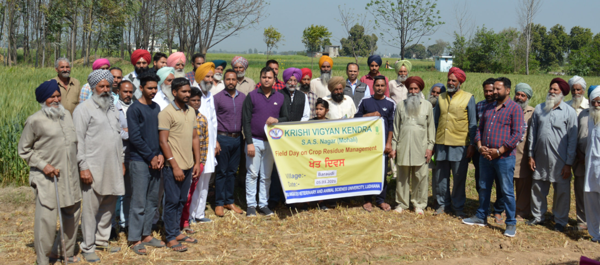

Surveyed farmers who had not received CRM information in time.

Enabling pathway / Behaviour change
Make the alternative
easier to act on.
Awareness is only the start. Farmers need a credible option, timely information, trusted guidance, a simple way to access services and confidence that the alternative will work.
01The Behaviour Challenge
The decision happens under time, cost and trust constraints.
Awareness does not become action when machinery is unavailable, advice arrives late or the alternative feels costly and risky. Communication must end in a functioning service and verified adoption.
Surveyed farmers unaware of the Unnat Kisan portal.
Surveyed farmers unaware of available CRM training.
Farmers identifying agricultural extension officers as most trusted.
Punjab system result2025
Final paddy-harvest season
Recorded fire events5,114
Lowest count reported under CAQM’s seasonal monitoring.
Change from 2024−53%
A combined system result, not an effect attributable to communication alone.
Source: CAQM’s final 2025 paddy-season assessment.
02The 4C Test
Communication must survive four gates.
CEEW's Punjab research offers a useful diagnostic. Select each gate to see what a campaign must accomplish.
Reach the right farmer
Information must arrive before the decision.
Segment by district, farm size, machine access and prior burning behaviour. Start outreach before harvest, not during the crisis.
Explain the action
Replace slogans with a workable plan.
Show the farmer which option fits the field, what it costs, who will deliver it and how to book it.
Use trusted proof
Let farmers see the alternative work locally.
Extension officers, progressive farmers, PAU and local institutions can reduce perceived risk when advice is backed by visible results.
Enable the action
Turn intention into a completed service.
Campaigns should end in booking, delivery, technical support and verification, with rapid recovery when a service fails.
03Punjab Ecosystem
Different organisations solve different parts.
Connect policy, trusted extension, implementation and evidence into one farmer journey.
Punjab + CAQMPolicy and accountability
Action plans, district delivery, IEC, monitoring and enforcement.
↗PAU + KVKsTechnical trustRecommendations, demonstrations, training and local advisory.
↗TNC / PRANACommunity mobilisationCommunication, demonstrations and decentralised service delivery.
↗CEEWBehavioural diagnosisEvidence on coverage, clarity, credibility and conversion.
↗J-PAL + PunjabIncentive testingPayments linked to verified no-burn outcomes.
↗Local institutionsLast-mile delivery
Panchayats, cooperatives, CHCs, farmer groups and local leaders.
04Design Principle
Every message should end in a service.
“Do not burn” is an instruction. “Your field is mapped, this option fits, it costs this much, and your service slot is confirmed” is a behaviour-change intervention.
Punjab's strongest opportunity is to connect trusted messengers to the operational systems already being built.
05Punjab Pathway
Design around the farmer journey.
Different farmers need different offers. The “winnable middle”, farmers who sometimes burn and sometimes adopt alternatives, should be the first priority.
- Segment villages and farmers
Use prior fire history, service access and willingness to adopt to tailor support rather than repeat one statewide message.
- Start before harvest
Publish options, prices and booking channels early enough for farmers to plan.
- Demonstrate locally
Shift spending toward field demonstrations, farmer champions and side-by-side cost and crop results.
- Make booking assisted
Pair digital portals with extension officers, call support and local facilitators who can complete the transaction.
- Combine incentives and accountability
Test partial advance payments and verified no-burn rewards alongside credible enforcement for repeated violations.
- Measure conversion
Track confirmed services, acres managed, repeat adoption and fire reduction, not only impressions or meetings.
Sources: CEEW 4C study · TNC PRANA implementation story · J-PAL evaluation. Photograph: GADVASU/PAU KVK field day, SAS Nagar.
Framework complete